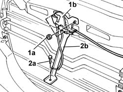
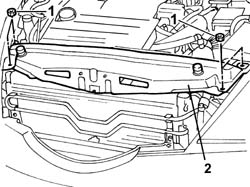
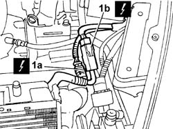
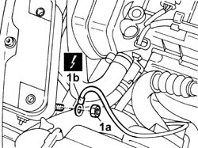
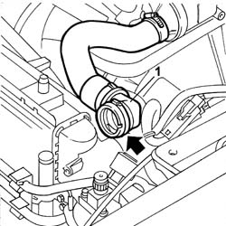
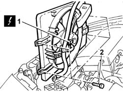

1088E10 Radiator cooling FAN - R.R.
- Path
- Procedures > 10 ENGINE > 1088 ENGINE COOLING > 1088E COOLANT TEMPERATURE CONTROL DEVICES > 1088E10 Radiator cooling FAN - R.R.
- Kind
- repair procedure (removal / refitting; the operation number is the code)
- Applies to
- engines: 2.0 TB, 2.4 20V, 3.0 V6, 3.2 V6; all production periods
- Interactive page
- https://sloeber94.github.io/elrnDB-lThss/en/#/75327
Applies to: engines: 2.0 TB; all production periods
 Removing
Removing
 Refitting
Refitting- Position the vehicle on a lift.
- Make sure that the ignition key is in the OFF position, then open the boot, remove the cover on the left hand side and disconnect the negative battery lead.
See in Op. 7040D50 ENGINE COMPARTMENT UPPER SOUND INSULATION SHIELD - R.R.
See in Op. 1048A10 COMPLETE AIR FILTER -R.R.
See in Op. 1048A50 air inlet pipe to turbocharger - r + r
See in Op. 1048A21 AIR INLET HOSE FROM INTAKE TO FILTER - R.R.
See in Op. 7055B54 PROTECTION/GUARD under engine - R.R.
1. Undo the fixing nuts (1a) and remove the bonnet lock (1b) from its housing in the crossmember.
2. Undo the lower bolt (2a) and remove the lock reinforcement bracket (2b).

Applies to: engines: 2.0 TB; all production periods
1. Undo the four fixing bolts.
2. Remove the upper crossmember.

Applies to: engines: 2.0 TB; all production periods
1. Disconnect the electrical connections for the engine cables/radiator fan cables coupling.
 | Description | Connector |
|---|---|---|
1a | Front/radiator coupling | D009A |
| Description | Connector |
|---|---|---|
1b | Front/radiator coupling | D009B |

Applies to: engines: 2.0 TB; all production periods
1. Undo the nut (1a) and disconnect the earth lead (1b) from the bodyshell.
| Description | Connector |
|---|---|---|
1b | Right front earth | C011 |

Applies to: engines: 2.0 TB; all production periods
- Position a container under the vehicle to collect the coolant.
1. Disconnect the upper hose from the radiator (rapid connector)

Applies to: engines: 2.0 TB; all production periods
1. Disconnect the electrical connection.
2. Undo the four bolts fixing the fan to the radiator and extract it.

Applies to: engines: 2.0 TB; all production periods
Refitting
Removing- Position the radiator cooling fan and secure it using the bolts.
- Connect the engine fan motor electrical connection.
- Connect the electrical connections for the engine cables/radiator fan cables coupling.
| Description | Connector |
|---|---|---|
. | Front/radiator coupling | D009A |
| Description | Connector |
|---|---|---|
. | Front/radiator coupling | D009B |
- Connect the earth lead to the bodyshell.
| Description | Connector |
|---|---|---|
. | Right front earth | C011 |
- Connect the upper hose to the radiator.
- Fit the upper crossmember and secure it using the bolts.
- Fit the bonnet lock and the reinforcement bracket.
See in Op. 1048A10 COMPLETE AIR FILTER -R.R.
See in Op. 1048A50 air inlet pipe to turbocharger - r + r
See in Op. 1048A21 AIR INLET HOSE FROM INTAKE TO FILTER - R.R.
- Connect the negative battery lead, then close the boot.
See in Op. 0010T21 ENGINE COOLANT - Check density and top up if necessary
-
See in Op. 7040D50 ENGINE COMPARTMENT UPPER SOUND INSULATION SHIELD - R.R.
See in Op. 7055B54 PROTECTION/GUARD under engine - R.R.
- Remove the vehicle from the lift.
Applies to: engines: 2.4 20V; all production periods
Removing
Refitting- Position the vehicle on a lift.
- Make sure that the ignition key is in the OFF position, then disconnect the negative battery lead.
See in Op. 7040D50 ENGINE COMPARTMENT UPPER SOUND INSULATION SHIELD - R.R.
See in Op. 1048A28 vacuum air circuit resonator pipe - r+r
See in Op. 1048A21 AIR INLET HOSE FROM INTAKE TO FILTER - R.R.
See in Op. 1048A23 Cold AIR INTAKE for air filter - R.R.
See in Op. 1048A10 COMPLETE AIR FILTER -R.R.
- Raise the vehicle.
See in Op. 7055B54 PROTECTION/GUARD under engine - R.R.
1. Undo the fixing nuts (1a) and remove the bonnet lock (1b) from its housing in the crossmember.
2. Undo the lower nut (2a) and remove the lock reinforcement bracket (2b).
Applies to: engines: 2.4 20V; all production periods
1. Undo the four fixing bolts and remove the upper crossmember.
Applies to: engines: 2.4 20V; all production periods
1. Disconnect the electrical connections (1a) and (1b) for the engine cables/radiator fan cables coupling.
| Description | Connector |
|---|---|---|
1 | Front/radiator coupling | D009A |
| Description | Connector |
|---|---|---|
b | Front/radiator coupling | D009B |
2. Undo the nut (2a) and disconnect the earth lead (2b) from the bodyshell.
| Description | Connector |
|---|---|---|
2b | Right front earth | C011 |
Applies to: engines: 2.4 20V; all production periods
- Position a container under the vehicle to collect the coolant.
- Lower the lift.
- Disconnect the upper hose from the radiator (rapid connector)
Applies to: engines: 2.4 20V; all production periods
1. Disconnect the electrical connection.
2. Undo the four bolts fixing the fan to the radiator and extract it.
Applies to: engines: 2.4 20V; all production periods
Refitting
Removing- Position the radiator cooling fan and secure it using the bolts.
- Connect the electrical connections for the engine cables/radiator fan cables coupling.
| Description | Connector |
|---|---|---|
. | Front/radiator coupling | D009A |
| Description | Connector |
|---|---|---|
. | Front/radiator coupling | D009B |
- Connect the earth lead to the bodyshell.
| Description | Connector |
|---|---|---|
. | Right front earth | C011 |
- Fit the upper crossmember and secure it using the bolts.
- Fit the bonnet lock and the reinforcement bracket.
- Connect the upper hose to the radiator.
See in Op. 1048A10 COMPLETE AIR FILTER -R.R.
See in Op. 1048A23 Cold AIR INTAKE for air filter - R.R.
See in Op. 1048A21 AIR INLET HOSE FROM INTAKE TO FILTER - R.R.
See in Op. 1048A28 vacuum air circuit resonator pipe - r+r
- Connect the negative battery lead.
- [0010T21]
- Raise the vehicle on the lift.
See in Op. 7055B54 PROTECTION/GUARD under engine - R.R.
See in Op. 7040D50 ENGINE COMPARTMENT UPPER SOUND INSULATION SHIELD - R.R.
- Remove the vehicle from the lift.
Applies to: engines: 3.0 V6, 3.2 V6; all production periods
- Procedure not yet available
Topics linked from this page (8)
- 0010T21 ENGINE COOLANT - Check density and top up if necessary
- 1048A10 COMPLETE AIR FILTER -R.R.
- 1048A21 AIR INLET HOSE FROM INTAKE TO FILTER - R.R.
- 1048A23 Cold AIR INTAKE for air filter - R.R.
- 1048A28 vacuum air circuit resonator pipe - r+r
- 1048A50 air inlet pipe to turbocharger - r + r
- 7040D50 ENGINE COMPARTMENT UPPER SOUND INSULATION SHIELD - R.R.
- 7055B54 PROTECTION/GUARD under engine - R.R.
Topics that link to this page (26)
- D36 ENGINE COOLANT OVERHEATING SIGNALLED BY GAUGE WITH VAPOURS VISIBLE
- D37 ENGINE COOLANT OVERHEATING SIGNALLED BY GAUGE WITH NO VAPOURS VISIBLE
- 1004B17 POWER UNIT with automatic transmission, complete with support frame, front suspension- R.R. for versions with air conditioning
- 1008A46 Power unit RIGID MOUNT - TIMING side - R&R
- 1016D20 LEFT CYLINDER HEAD - R.R. and replace gasket
- 1020A20 CRANKCASE SUMP - R.R. clean contact surfaces and apply sealant
- 1020D39 Flywheel side OIL SEAL - Replace for versions with automatic transmission
- 1024B20 ENGINE FLYWHEEL - R&R for versions with automatic transmission
- 1048B14 air delivery pipe between turbo charger and heat exchanger - replace
- 1064A19 HOSE CONNECTED to EXHAUST PIPE - R.R.
- 1072C44 Exhaust manifold heat shield on BULKHEAD - R.R.
- 1080B38 LEFT CATALYTIC PRECONVERTER - R.R. or Replace Gasket
- 1080B40 CATALYTIC PRECONVERTER - R.R.
- 1084B40 Engine oil supply pipe to turbocharger
- 1084B42 Engine oil return pipe to turbocharger
- 1084C10 Engine oil heat exchanger - R.R.
- 1088D16 RIGID PIPE between radiator hoses and thermostat - R.R.
- 1088D22 WATER PUMP INLET CONNECTOR - R.R.
- 1088D47 COOLANT SUPPLY AND RETURN HOSES TO ENGINE OIL HEAT EXCHANGER - R.R.
- 4130B20 POWER ASSISTED STEERING PUMP - R.R.
- 4130B21 POWER ASSISTED STEERING PUMP - R.R. with interfering belt(s) removed - Includes bleeding air
- 4130B94 DUPLEX PIPES from cooling coil or heat exchanger radiator - R.R.
- 4130C14 Converter VALVE ON power steering box - R.R.
- 4410D10 Front suspension FRAME - R.R.
- 5040A20 Air conditioning COMPRESSOR - R.R. - Includes fluid level check and top up if necessary
- 5040A41 Air conditioning condenser FAN - R.R.